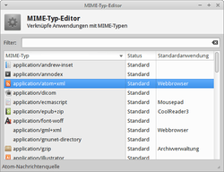

MIME-Typ
Zum Verständnis dieses Artikels sind folgende Seiten hilfreich:
 MIME (Multipurpose Internet Mail Extension) wurde als Standard zur Erweiterung des E-Mail-Protokolls entwickelt. Ursprünglich war mit diesem Protokoll lediglich die Übertragung von reinem ASCII-Text möglich. Die Spezifikationen des neu eingeführten Standards ermöglichten schließlich die Übertragung von beliebigen Dateiformaten z.B. im Anhang einer E-Mail.
MIME (Multipurpose Internet Mail Extension) wurde als Standard zur Erweiterung des E-Mail-Protokolls entwickelt. Ursprünglich war mit diesem Protokoll lediglich die Übertragung von reinem ASCII-Text möglich. Die Spezifikationen des neu eingeführten Standards ermöglichten schließlich die Übertragung von beliebigen Dateiformaten z.B. im Anhang einer E-Mail.
Inzwischen wird der MIME-Standard darüber hinaus in verschiedenen Anwendungsbereichen zur Deklaration von Dateiinhalten eingesetzt. Darunter u.a. die Multimedia-Kommunikation verschiedener Internet-Protokolle oder den Dateimanagern von Desktop-Umgebungen. MIME-Types (heute auch „Internet Media Types“ oder einfach „Content-Types“) bezeichnen die einzelnen Definitionen, in denen Dateiinhalte und Dateiformate referenziert werden, um eine softwareseitige Identifikation einer Datei zu ermöglichen bzw. zu erleichtern.
Die offizielle Registrierung eines MIME-Types wird von der IANA  (Internet Assigned Numbers Authority) übernommen. Diese Organisation pflegt eine Liste der offiziell registrierten MIME-Types , weshalb hier auf eine weitere Auflistung verzichtet wird.
(Internet Assigned Numbers Authority) übernommen. Diese Organisation pflegt eine Liste der offiziell registrierten MIME-Types , weshalb hier auf eine weitere Auflistung verzichtet wird.
Allgemein¶
Die Namensgebung der MIME-Types folgt einer in den Spezifikationen des Standards zur Kategorisierung und Vermeidung von Namenskonflikten festgelegten Form. Diese Konvention beinhaltet zusätzlich eine Vorgabe, wie nicht offiziell registrierte MIME-Types zu benennen sind.
VENDORPREFIX-CONTENTTYPE/VENDORPREFIX-SUBTYPE
CONTENTTYPEbezeichnet Obergruppen, in die einzelne Definitionen kategorisiert werden. Eine Liste der offiziellen Gruppen mit Beschreibung kann in der Wikipedia eingesehen werden.SUBTYPEist die eigentliche Definition samt Um-/Beschreibung eines MIME-Types für sein jeweiliges Dateiformat.VENDORPREFIXstellt als zusätzliches Präfix vor einemCONTENTYPEoderSUBTYPEdie legitime Möglichkeit dar, nicht offiziell von der IANA registrierte MIME-Types von system- bzw. herstellerspezifischen zu unterscheiden um Konflikte zu vermeiden. Das gängige Präfix für Linux ist ein "x-".
Beispiele:
text/html - Das offizielle von der IANA registrierte HTML-Dokument in der Standardobergruppe "
text".image/x-xcf - Das nicht offiziell von der IANA registrierte Speicherformat von GIMP in der Standardgruppe "
image".x-content/blank-cd - Der MIME-Type für eine leere CD in der systemspezifischen Obergruppe "
x-content". Das Präfix für den SUBTYPE kann hier entfallen, weil durch die Obergruppe bereits eindeutig ist, dass keiner der enthaltenenSUBTYPESoffiziell registriert sein kann.
Um einen MIME-Type mit dem Inhalt eines bestimmten Dateiformats zu referenzieren, kommen verschiedenen Methoden je nach Implementation des Standards in der jeweiligen Softwareumgebung zum Einsatz. Zwei der gängigsten Methoden referenzieren einmal anhand von Globs im Dateinamen, besser bekannt als Dateiendung, und anhand einer Magischen Zahl, auch bekannt als "MIME-Sniffing".
Bei der zweiten Methode wird unabhängig von einer Dateiendung direkt im Binärcode nach einer einheitlichen Abfolge von Bytes am oder in der Nähe des Anfangs einer Datei gesucht, um ein Dateiformat eindeutig zu identifizieren. Beide Methoden haben ihre Vor- und Nachteile, sind aber besonders effektiv, wenn sie – wie z.B. unter Linux – gemeinsam verwendet werden.
MIME-Types in Linux¶
Unter Linux gibt es verschiedene Implementationen des MIME-Standards, die für eine bestimmte Software oder eine ganze Softwareumgebung Musterdateien oder Datenbanken verwenden, die Definitionen für MIME-Types enthalten. Das UNIX-Dateisystem, das als konkrete Vorlage für sämtliche Linux-Dateisysteme dient, interpretiert genau ein Dateiformat – nämlich "Datei".
Dieses UNIX-Dateiformat wird zusätzlich unterteilt in spezielle Typen, die über die Rechteverwaltung des Dateisystems definiert werden. Dateistruktur und -interpretation ist damit allein Aufgabe von Software, deswegen ist zur Unterscheidung der Unmengen tatsächlich existierender Dateiformate eine solche Implementation in Linux notwendig.
Musterdateien¶
Das erste Werkzeug zur softwareseitige Identifikation war der Kommandozeilenklassiker file, der bereits seit Anfang der 1970er Jahre fester Bestandteil von UNIX wurde und auch heute noch zur Standardinstallation der meisten Linux-Distribution gehört. Das Programm referenzierte ursprünglich "Magische Zahlen" mit einer kurzen Beschreibung für jedes Dateiformat in einer Musterdatei. Seit 2001 werden in einer weiteren Musterdatei diese magischen Zahlen auch mit einer Beschreibungen gemäß der Namenskonvention des MIME-Standards referenziert.
file ist ein wertvolles Artefakt, das auch heute noch mit Recht seinen Platz in einer Kommandozeilenumgebung hat. Die Musterdatei ist nach heutigem Stand aber weder besonders vollständig noch aufgrund der komplexen Escape-Regeln einfach anzupassen. Zudem spielt das Programm in den aktuellen Desktop-Umgebungen nur eine untergeordnete Rolle. Wer sich dennoch näher dafür interessiert, findet in den Manpages zu file und magic einen ausführlichen Einstieg in die Materie.
Ähnliche, einfacher anzupassende Musterdateien werden auch von anderer Software verwendet, wie z.B. vom E-Mail-Client mutt, dem Webserver Apache oder dem Drucksystem CUPS. Das gehört aber zur Konfiguration dieser Software und ist in deren Dokumentation genauer erklärt.
Gemeinsame MIME-Datenbank¶
In den aktuellen Desktop-Umgebungen wie GNOME, KDE, Xfce oder LXDE wird eine gemeinsame MIME-Datenbank verwendet. Diese ist in allen Desktop-Umgebungen einheitlich gemäß den Spezifikationen der XDG (X Desktop Group) implementiert.
Die Datenbank besteht vorwiegend aus XML-Dateien und einigen binären Musterdateien, in denen die Definitionen eines MIME-Types abgelegt sind. Zu diesen Definitionen gehört neben Globs und Magischen Zahlen für die Referenzierung auch eine mehrsprachige kurze Beschreibung, die standardmäßig in Dateimanagern angezeigt wird.
Diese gemeinsame MIME-Datenbank stellt die derzeit für die meisten Anwender wichtigste Implementation des MIME-Standards in Linux dar. Datei-Identifikation in Dateimanagern, Festlegen von Standardanwendungen oder die Syntax-Hervorhebung in GTKSourceView-basierenden Texteditoren wie gedit, Anjuta oder Scribes basieren im Prinzip auf den Informationen in dieser Datenbank.
Hinweis:
Genaueres zum Aufbau der gemeinsamen MIME-Datenbank kann man in den Spezifikationen der XDG nachlesen.
Benutzung der gemeinsamen MIME-Datenbank¶
Obwohl das von der XDG bereitgestellte Paket der MIME-Types bereits sehr umfangreich ist, Programme mit ihren eigenen Dateiformaten in der Regel automatisch bei der Installation in die Datenbank einfügen und in den Symbol-Sätzen (Icon Sets) für die meisten MIME-Types existieren, besteht trotzdem hin und wieder die Notwendigkeit, als Anwender selbst Hand anzulegen. Ein gutes Beispiel ist die Syntax-Hervorhebung für auf GTKSourceView basierenden Texteditoren nachzurüsten, weil dabei ein MIME-Type für die Quellcodedatei existieren muss – so umgesetzt z.B. im Projekt gedit-inyoka.
Die gemeinsame Datenbank befindet sich in den Verzeichnissen:
/usr/share/mime/ (systemweite Datenbank)
~/.local/share/mime/ (benutzerdefinierte Datenbank)
Für den Anwender sind dort lediglich die XML-Dateien in den folgenden beiden Verzeichnissen relevant:
/usr/share/mime/packages/ (systemweite MIME-Type-Pakete)
~/.local/share/mime/packages/ (benutzerdefinierte MIME-Type-Pakete)
Achtung!
Bei der Änderung anderer Dateien der Datenbank außer den vorgesehenen MIME-Types-Paketen kann die gemeinsame MIME-Datenbank Schaden nehmen!
Der Begriff „Paket“ bzw. das Verzeichnis packages erscheint im ersten Moment etwas verwirrend, rührt aber daher, dass in einer dieser XML-Dateien die Definitionen für mehr als einen MIME-Type abgelegt werden können. Zum Beispiel enthält die Datei /usr/share/mime/packages/freedesktop.org.xml alle Definitionen für MIME-Types, die von der XDG bereitgestellt werden – darunter auch sämtliche offiziell von der IANA registrierten MIME-Types.
Diese „Pakete“ sind an sich kein Bestandteil der eigentlichen Datenbank, sondern dienen als Inputdateien, aus denen mit einem Befehl automatisch die Datenbank generiert bzw. erweitert wird.
Werkzeuge¶
Die XDG bietet für die Arbeit mit der gemeinsamen MIME-Datenbank einen Satz Scripte an, die einige Prozesse automatisieren und somit vereinfachen sollen. Das Paket xdg-utils enthält unter anderem die hier relevanten Scripte xdg-mime, xdg-open und xdg-icon-resource.
Hinweis:
Das Script xdg-mime aus diesem Paket ist nicht in der Lage, den MIME-Type einer entsprechenden Datei aus der gemeinsamen MIME-Datenbank auszulesen. Beim Aufruf [1] von
xdg-mime query filetype DATEI
wird in der Regel auf das Befehlszeilenwerkzeug file zurückgegriffen, welches seine Informationen aus einer eigenen Musterdatei bezieht.
Um sich den MIME-Type bzw. die referenzierte mehrsprachige Beschreibung einer Datei aus der gemeinsamen MIME-Datenbank auf der Befehlszeile ausgeben zu lassen, gibt es ein Perl-Script.
libfile-mimeinfo-perl (universe)
 mit apturl
mit apturl
Paketliste zum Kopieren:
sudo apt-get install libfile-mimeinfo-perl
sudo aptitude install libfile-mimeinfo-perl
Beispiel:
mimetype DATEI mimetype -d DATEI
Dateimanager¶
Die Dateimanager der großen Desktop-Umgebungen zeigen standardmäßig lediglich eine Spalte für die referenzierte, mehrsprachige Beschreibung eines MIME-Types für eine Datei an. Es kann aber eine zusätzliche Spalte hinzugefügt werden, die den tatsächlichen MIME-Type ausgibt:
Nautilus (jeweils in Kombination mit "Ansicht -> Listenansicht"):
entweder "Ansicht -> Anzuzeigende Spalten... -> MIME-Type"
oder "Bearbeiten -> Einstellungen -> Listenspalten -> MIME-Type"
Thunar (in Kombination mit "Anzeige -> Detailansicht"):
"Anzeige -> Listenspalten festlegen... -> MIME-Type"
PCManFM kann keine zusätzliche Spalte anzeigen, gibt aber den MIME-Type standardmäßig in den Eigenschaften einer Datei aus
MIME-Types editieren¶
Siehe Standardanwendung festlegen. Speziell bei Xubuntu kann auch der "MIME-Typ-Editor" genutzt werden, der im Einstellungsmanager zu finden ist.
|  |
| MIME-Editor bei Xfce |
Symbole für MIME-Types¶
Die Symbole befindet sich in den Verzeichnissen:
/usr/share/icons/ (systemweit)
~/.local/share/icons/ (pro Benutzer)
und sind in der Regel in den Abmessungen quadratisch (Beispiel: 128x128 Pixel). Die Abmessungen sind aber nicht zwingend vorgeschrieben. Häufig sind die Symbole in unterschiedlichen Abmessungen auf eigene Ordner verteilt. Als Format wird meist .png, .svg oder das ältere .xpm verwendet. SVG ist ein Vektorgrafikformat, was in der Praxis stufenloses Skalieren ermöglicht. Nachteilig ist aber im Gegensatz zu PNG die teilweise fehlende Unterstützung durch die verwendete Desktop-Umgebung.
Standardanwendung festlegen¶
Die systemweiten Voreinstellungen können durch den Benutzer ergänzt werden. Da dies wohl der häufigste Anwendungsfall ist, soll hier genauer darauf eingegangen werden. Zwar bieten die meisten Desktop-Umgebungen einen grafischen Einstellungs-Dialog, wobei KDE noch die meisten Möglichkeiten anbietet. Dennoch beschränken sich die Änderungen im Regelfall auf:
den Webbrowser
den E-Mail Client
das Terminal
und den Dateimanager (nicht immer)
Wer darüber hinaus Einstellungen für bestimmte Dateien vornehmen möchte, kann dies entweder mit dem jeweiligen Dateimanager und dessen Kontextmenü  erledigen ("Öffnen mit" und "Einstellung merken") oder sich mit den zugrundeliegenden Prinzipien beschäftigen (siehe unten). Bei manchen Versionen von Nautilus (z.B. Ubuntu GNOME 14.04 LTS) kann man die Standardanwendung nur über , "Eigenschaften", Reiter: "Öffnen mit", Anwendung auswählen und anschließend "Als Vorgabe festlegen" abspeichern und nicht über den "Öffnen mit"-Dialog wie vorher beschrieben.
erledigen ("Öffnen mit" und "Einstellung merken") oder sich mit den zugrundeliegenden Prinzipien beschäftigen (siehe unten). Bei manchen Versionen von Nautilus (z.B. Ubuntu GNOME 14.04 LTS) kann man die Standardanwendung nur über , "Eigenschaften", Reiter: "Öffnen mit", Anwendung auswählen und anschließend "Als Vorgabe festlegen" abspeichern und nicht über den "Öffnen mit"-Dialog wie vorher beschrieben.
Experten-Info:
Speziell unter Debian und Ubuntu kann auch das Alternativen-System weiterhelfen. Dieses bietet insbesondere bei systemweiten Änderungen einen eleganten Ansatz, Standardanwendungen zu setzen oder zu ändern.
Wer ein Praxis-Beispiel zum Alternativen-System sucht, wird in den Unterartikeln zu Oracle Java fündig.
Die relevanten Dateien werden in folgender Reihenfolge berücksichtigt:
~/.local/share/applications/mimeapps.list bzw. ab Ubuntu 15.04 ~/.config/mimeapps.list (Sektionen
[Default Applications]und[Added Applications])/usr/share/applications/mimeapps.list (Sektionen
[Default Applications]und[Added Applications])
Daraus folgt, dass für den Benutzer die ersten beiden Dateien besonders interessant sind. Diese Dateien lassen sich bei Bedarf mit einem Editor bearbeiten [2]. Letzten Endes machen Dateimanager auch nichts anderes.
Beispiel¶
Um das Programm Geeqie als Standardanwendung (Doppelklick links) für PNG-Dateien festzulegen, nimmt man folgende Änderung vor:
~/.local/share/applications/mimeapps.list bzw. ab Ubuntu 15.04 ~/.config/mimeapps.list
[Default Applications] image/png=geeqie.desktop [Added Associations] image/png=gpicview.desktop;eog.desktop;firefox.desktop;mtpaint.desktop;geeqie.desktop;
Auf dem gleichen Weg lassen sich auch benutzerdefinierte Zuordnungen wieder entfernen.
Links¶
IANA
- Internet Assigned Numbers AuthorityWikipedia:
XDG
- X Desktop Groupinteressante Informationen:
Changing filetype association via MIME
- Arch WikiDefault Applications
- Arch Wiki
- Erstellt mit Inyoka
-
 2004 – 2017 ubuntuusers.de • Einige Rechte vorbehalten
2004 – 2017 ubuntuusers.de • Einige Rechte vorbehalten
Lizenz • Kontakt • Datenschutz • Impressum • Serverstatus -
Serverhousing gespendet von